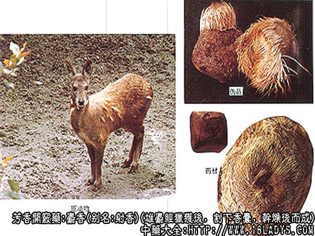

本品为常用中药。《神农本草经》列为上品，是我国特产名贵药材之一。
别名：射香、寸香、元寸。
来源：为鹿科动物麝，雄性腹脐部（鼠蹊部）生长的香囊中积聚的香腺分泌物和香囊在新陈代谢过程中脱落的内皮膜，经分泌物长期浸润溶化，混合而成为膏状、团块状物体。雄麝经猎获后，割下香囊，干燥后而成。
麝：为野生，杀麝取香，影响繁殖，损伤药源。为了保护药源增加生产，现在积极进行野生变人工养殖，活麝人工取香的试验，已在四川等省初步试验成功。
产地：主产于西藏、四川、陕西、甘肃、青海、云南、贵州、湖北、广西、另外湖南、河南、安徽、山西、内蒙、辽宁、吉林、黑龙江等省均有分布。多生繁于较大的山脉森林区的浅林地带。
性状鉴别：麝香，在商品中氛围毛壳麝香、麝香仁，麝香子。
炮制：研细、生用。
性味：辛、温。
归经：入心、脾、肝经。
功能：开窍辟秽、活血、散结。
主治：热病神昏、中风痰厥，惊痫、心腹暴痛，跌打疮疡。
毛壳麝香：是带有囊皮（外壳）的原装麝香，本品呈圆柱形或扁圆形，如核桃，如小柿饼，直径3～5里面，重约9～18g，外壳有1/3或1/2带有较厚的腹皮，上面生有灰白色毛，中间有一小孔，是香囊的囊口。旁侧另有一小孔或小瘤点是尿孔的所在。两孔处的毛棕褐色。不带毛的囊皮薄如尿胞皮。整个外壳褐色或灰褐色，常带有不规则的皱纹。剥开壳皮，露出紫棕色或棕黄色显油色润的小颗粒粉末和黑棕色的小团块，并夹杂有少量的脱落后未溶化的内皮膜和细毛，这即是原装统货麝香仁，选出其中较大原团块即为麝香子，因团块之大可堵住香囊之口（香门）故又称“当门子”。剩余的碎小颗粒粉末即称麝香仁，又名散香。根据当门子和散香的颜色不同，习惯上有黑子黄香之说。被剥裂的不带毛的壳皮，由数层薄膜组成，其薄如纸可层层剥落，内层薄膜因受麝香浸染呈棕黄色或棕黑色，上面常黏附有少量麝香，中间层银白色，故又名银皮。
麝香仁：碎小颗粒粉末，黄棕色或紫棕色，质柔润显油性。香气浓烈久嗅有臊臭味，入口微苦辣。
麝香子：团块状，大小不一，大如羊粪蛋，小如绿豆瓣。表面黑棕色，油润光亮，微显麻纹或有小凸点，但无明显的锐棱角。质坚实不易破碎。断面紫棕色，不平坦，偶有未溶化的内皮膜裹结其中。香气教散香尤为浓烈，习惯上认为是麝香中的上品。
麝香为贵重药材，新中国前伪造掺假者颇多，现已少见，但由于生产分散，仍有个别掺假现象。为了保证药品疗效，减少经济损失，仍须认真鉴别，现将几种鉴别方法，分述如下：
（1）鉴别毛壳麝香。先用手压捏不带毛的囊皮处，须有柔软感觉而无硬性顶手的物质。被压捏下陷的皮囊放手后应弹起恢复原状。亦可用特制的带糟深针在囊口处探入，探出部分麝香仁进行分析。
（2）鉴别麝香仁。可取麝香少许放于掌心或拇指之间进行捻搓。可捻搓成团状，但不粘手或脱色染手，捻搓成的团扁，放手后即松散或弹起，而不成硬结块状。捻完麝香之手，香味在手上经久不去。
（3）取麝香少许放于舌尖和门齿间，进行咬尝，齿咬不粘牙，或无尘砂杂质的垫牙感觉，舌感微苦而麻辣，香臊浓烈。扩散性强，立即通于鼻腔。
（4）取麝香少许放锡纸上，下面微火燃烧，麝香能产生跳动并发出微的爆裂声，渐溶成黑色油泡，而后开始燃烧，香臊四溢，烧透后灰呈白色。
（5）取麝香少许投入开水杯中，立即溶出淡黄色素，水被染成淡黄色，但仍清澈而不浑浊，溶解部分约占60%～70%，不溶部分只能是微笑的麝香子和散碎皮膜。不能有淀粉、尘砂、纤维等物质。否则必然有掺杂。
（6）取麝香子一、二粒，投入开水杯中，亦即溶出淡黄色色素。但经较长时间的浸泡，仍能保持原状而不崩解溶化。
主要成分：含麝香酮，香气浓烈，经久不散。另含胆甾醇、甾体激素样物质。
药理作用：开窍、活血、催生、其原理为：
（1）兴奋中枢。能兴奋呼吸中枢和血管运动中枢，故能回苏救急。动物实验证实有强心作用，使血压上升，心博加强。
（2）抗菌。 其酊剂在试管内能抑制大肠杆菌和金黄色葡萄球菌生长。
（3）兴奋子宫。对实验动物离体子宫呈明显的兴奋作用。在整体情况下，对晚期妊娠子宫的兴奋作用更为明显。
临床应用：主要用中枢神经兴奋药。
用于热性病高热、神志昏迷、痉厥抽搐，或中风痰厥（昏迷），取其有兴奋中枢神经系统作用，配其他清热、开窍、镇惊药如牛黄、冰片、朱砂等，制成丸散，方如至宝丹。实验证明，至宝丹有抗惊厥作用，但刺激脊髓、故惊厥由脊髓兴奋所致者不宜用。
用于消肿散结，治跌打损伤，取其有活血作用，又治痈疽肿毒取其有抗菌和止痛作用，方如七厘散、醒消丸等。
附：
（1）本品虽有兴奋子宫作用，但临床少用于催生，因实验发现其子宫的兴奋易转为持续痉挛状态。孕妇一般忌用（尤其晚期妊娠）；
（2）朱丹溪曾为本品风病、血病不可用，可能是嫌其发散，值得注意。有血压增高倾向者更宜慎用。
用量：0.09～0.15g，入丸散剂。
处方举例：至宝丹（《局方》）：成药，含麝香、犀角、牛黄、玳瑁、冰片、朱砂、琥珀、雄黄、安息香、银箔等，每次1丸（或散剂1.5g），每日1～2次。